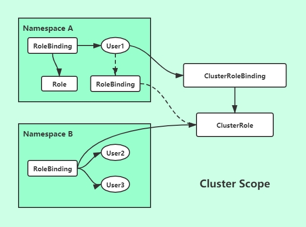

1 什么是RBAC
RBAC(Role-Based Access Control) 基于角色的访问控制，顾名思义就是通过给角色赋予相应的权限，从而使得该角色具有访问相关资源的权限，而在K8s中这些资源分属于两个级别，名称空间（role/rolebinding）和集群级别（clusterrole/clusterrolebinding）这两个都是标准的K8s资源，可以直接定义。
k8s集群有两类认证时的Account：useraccount（管理者、访问者）、serviceaccount（pod）。这些Account就是下文中我们提到的User，这两种User面向的对象不同。
- ServiceAccount是为了方便Pod里面的进程调用Kubernetes API或其他外部服务。
- User account是为人设计的，而ServiceAccount则是为了Pod中的进程，此外User Account是跨Namespace的，而ServiceAccount则是仅局限它所在的Namespace

如上图所示，在不同名称空间中，我们需要有一个Role，此Role定义了User访问此名称空间的权限，如GET、WATCH、LIST等，通过RoleBinding，使得Role和User进行关联，从而授权User具有相关资源的访问权限，这样就是一个Role/RoleBinding。但是刚才说的只是针对当前名称空间的绑定授权，那如果一个Role想要具有访问整个集群的权限，这个时候就需要使用到ClusterRole和ClusterRoleBinding了。
示例说明：
- 上图User1如果通过
ClusterRoleBing和ClusterRole进行了绑定，那么User1就具有了集群所有的访问权限 - 如果User1通过
RoleBingding绑定到了ClusterRole，那么User1还是只有其所属名称空间的权限 - 那如果我们集群有10个名称空间，正常情况下我们需要给每个名称空间都配置一个Role，即我们需要创建10个Role，然后再
RoleBinding，操作复杂；此时如果我们定义了一个ClusterRole，那么可以直接让RoleBinding去绑定ClusterRole，这样我们就不用再创建10个Role的复杂流程但是可以实现我们想要的功能。
2 创建Account
2.1 创建ServiceAccount(sa)
[root@master1 ~]# kubectl create serviceaccount rsq --dry-run （干跑）
serviceaccount/rsq created (dry run)
[root@master1 ~]# kubectl create serviceaccount rsq -o yaml --dry-run （生成一个框架）
apiVersion: v1
kind: ServiceAccount
metadata:
creationTimestamp: null
name: rsq
# 如果我们想要导出一个pod的yaml，有个简化参数 --export
[root@master1 ~]# kubectl get pods pod-cm-3 -o yaml --export
# 创建一个admin的sa
[root@master1 ~]# kubectl create serviceaccount admin
serviceaccount/admin created
[root@master1 ~]# kubectl get sa
NAME SECRETS AGE
admin 1 1s
default 1 44d
[root@master1 ~]# kubectl describe sa admin
Name: admin
Namespace: default
Labels: <none>
Annotations: <none>
Image pull secrets: <none>
Mountable secrets: admin-token-bwrbg
Tokens: admin-token-bwrbg
Events: <none>
[root@master1 ~]# kubectl get secret
NAME TYPE DATA AGE
admin-token-bwrbg kubernetes.io/service-account-token 3 35s[root@master1 manifests]# vim pod-sa-demo.yaml
apiVersion: v1
kind: Pod
metadata:
name: pod-sa-demo
namespace: default
labels:
app: sa-myapp
tier: frontend
annotations:
rsq.com/created-by: "cluster admin"
spec:
containers:
- name: myapp
image: nginx:1.14-alpine
ports:
- name: http
containerPort: 80
serviceAccountName: admin
[root@master1 manifests]# kubectl apply -f pod-sa-demo.yaml
pod/pod-sa-demo created
[root@master1 manifests]# kubectl describe pod pod-sa-demo
...... #就会使用admin的token
Volumes:
admin-token-bwrbg:
Type: Secret (a volume populated by a Secret)
SecretName: admin-token-bwrbg
Optional: false
......2.2 创建UserAccount并自签证书
自签CA证书
[root@master1 ~]# cd /etc/kubernetes/pki/
[root@master1 pki]# (umask 077; openssl genrsa -out rsq.key 2048)
[root@master1 pki]# openssl req -new -key rsq.key -out rsq.csr -subj "/CN=rsq"
[root@master1 pki]# openssl x509 -req -in rsq.csr -CA ca.crt -CAkey ca.key -CAcreateserial -out rsq.crt -days 9999
Signature ok
subject=/CN=rsq
Getting CA Private Key
# 输出证书信息
[root@master1 pki]# openssl x509 -in rsq.crt -text -noout[root@master1 pki]# kubectl config set-credentials rsq --client-certificate=./rsq.crt --client-key=./rsq.key --embed-certs=true
User "rsq" set.
[root@master1 pki]# kubectl config view
apiVersion: v1
clusters:
- cluster:
certificate-authority-data: DATA+OMITTED
server: https://10.0.0.100:6443
name: kubernetes
contexts:
- context:
cluster: kubernetes
user: kubernetes-admin
name: kubernetes-admin@kubernetes
current-context: kubernetes-admin@kubernetes
kind: Config
preferences: {}
users:
- name: kubernetes-admin
user:
client-certificate-data: REDACTED
client-key-data: REDACTED
- name: rsq
user:
client-certificate-data: REDACTED
client-key-data: REDACTED[root@master1 pki]# kubectl config set-context rsq@kubernetes --cluster=kubernetes --user=rsq
Context "rsq@kubernetes" created.
[root@master1 pki]# kubectl config view
apiVersion: v1
clusters:
- cluster:
certificate-authority-data: DATA+OMITTED
server: https://10.0.0.100:6443
name: kubernetes
contexts:
- context:
cluster: kubernetes
user: kubernetes-admin
name: kubernetes-admin@kubernetes
- context: # 生成 rsq上下文环境
cluster: kubernetes
user: rsq
name: rsq@kubernetes
current-context: kubernetes-admin@kubernetes
kind: Config
preferences: {}
users:
- name: kubernetes-admin
user:
client-certificate-data: REDACTED
client-key-data: REDACTED
- name: rsq
user:
client-certificate-data: REDACTED
client-key-data: REDACTED[root@master1 pki]# kubectl config use-context rsq@kubernetes
Switched to context "rsq@kubernetes".
# 执行get命令会发现没有权限去访问，因为rsq@kubernetes没有授权
[root@master1 pki]# kubectl get pods
Error from server (Forbidden): pods is forbidden: User "rsq" cannot list resource "pods" in API group "" in the namespace "default"
# 切换为默认的集群环境
[root@master1 pki]# kubectl config use-context kubernetes-admin@kubernetes
Switched to context "kubernetes-admin@kubernetes".[root@master1 pki]# kubectl config set-cluster mycluster --kubeconfig=/tmp/test.conf --server="https://10.0.0.100:6443" --certificate-authority=/etc/kubernetes/pki/ca.crt --embed-certs=true
Cluster "mycluster" set.
[root@master1 pki]# kubectl config view --kubeconfig=/tmp/test.conf
apiVersion: v1
clusters:
- cluster:
certificate-authority-data: DATA+OMITTED
server: https://10.0.0.100:6443
name: mycluster
contexts: []
current-context: ""
kind: Config
preferences: {}
users: []3 RBAC认证授权
RBAC绑定流程
-
定义一个角色role
operations（对哪个对象进行操作）许可授权，只能允许objects -
定义用户账号或者服务账号，绑定（
rolebinding）user accountorservice account（让这个用户）role（绑定到这个角色）
3.1 Role/RoleBinding
1、创建一个只对pod有查看的role
# 1、创建Role
[root@master01 ~]# kubectl create role pods-reader --verb=get,list,watch --resource=pods --dry-run
role.rbac.authorization.k8s.io/pods-reader created (dry run)
[root@master01 ~]# kubectl create role pods-reader --verb=get,list,watch --resource=pods --dry-run -o yaml
apiVersion: rbac.authorization.k8s.io/v1
kind: Role
metadata:
creationTimestamp: null
name: pods-reader
rules:
- apiGroups:
- ""
resources:
- pods
verbs:
- get
- list
- watch
[root@master01 rbac]# kubectl apply -f role-demo.yaml
role.rbac.authorization.k8s.io/pods-reader created
[root@master01 rbac]# kubectl get role
NAME AGE
pods-reader 4s
[root@master01 rbac]# kubectl describe role pods-reader
Name: pods-reader
Labels: <none>
Annotations: kubectl.kubernetes.io/last-applied-configuration:
{"apiVersion":"rbac.authorization.k8s.io/v1","kind":"Role","metadata":{"annotations":{},"name":"pods-reader","namespace":"default"},"rules...
PolicyRule:
Resources Non-Resource URLs Resource Names Verbs
--------- ----------------- -------------- -----
pods [] [] [get list watch][root@master01 rbac]# kubectl create rolebinding rsq-read-pods --role=pods-reader --user=rsq
rolebinding.rbac.authorization.k8s.io/rsq-read-pods created
[root@master01 rbac]# kubectl get rolebinding
NAME AGE
rsq-read-pods 6s
[root@master01 rbac]# kubectl create rolebinding rsq-read-pods --role=pods-reader --user=rsq --dry-run -o yaml
apiVersion: rbac.authorization.k8s.io/v1
kind: RoleBinding
metadata:
creationTimestamp: null
name: rsq-read-pods
roleRef:
apiGroup: rbac.authorization.k8s.io
kind: Role
name: pods-reader
subjects:
- apiGroup: rbac.authorization.k8s.io
kind: User
name: rsq[root@master01 rbac]# kubectl create rolebinding rsq-read-pods --role=pods-reader --user=rsq --dry-run -o yaml > rolebinding-demo.yaml[root@master01 rbac]# kubectl config use-context rsq@kubernetes
Switched to context "rsq@kubernetes".
[root@master01 rbac]# kubectl get pods
NAME READY STATUS RESTARTS AGE
myapp-0 1/1 Running 0 4h52m
myapp-1 1/1 Running 0 4h40m
pod-cm-1 1/1 Running 0 5h7m
pod-cm-3 1/1 Running 0 5h3m
pod-sa-demo 1/1 Running 0 3h28m
tomcat-deploy-67c46fdf58-9qggk 1/1 Running 0 21h
tomcat-deploy-67c46fdf58-qxggk 1/1 Running 0 21h
tomcat-deploy-67c46fdf58-vgcdf 1/1 Running 0 21h
web-0 1/1 Running 0 26h
web-1 1/1 Running 0 26h
web-2 1/1 Running 0 26h
# 但是只能对default名称空间生效
[root@master01 rbac]# kubectl get pods -n kube-system
Error from server (Forbidden): pods is forbidden: User "rsq" cannot list resource "pods" in API group "" in the namespace "kube-system"3.2 ClusterRole/RoleBinding
1、创建ClusterRole
[root@master01 rbac]# kubectl create clusterrole cluster-reader --verb=get,list,watch --resource=pods -o yaml --dry-run > clusterrole-demo.yaml
[root@master01 rbac]# vim clusterrole-demo.yaml
[root@master01 rbac]# cat clusterrole-demo.yaml
apiVersion: rbac.authorization.k8s.io/v1
kind: ClusterRole
metadata:
name: cluster-reader
rules:
- apiGroups:
- ""
resources:
- pods
verbs:
- get
- list
- watch
[root@master01 rbac]# kubectl describe clusterrole cluster-reader
Name: cluster-reader
Labels: <none>
Annotations: kubectl.kubernetes.io/last-applied-configuration:
{"apiVersion":"rbac.authorization.k8s.io/v1","kind":"ClusterRole","metadata":{"annotations":{},"name":"cluster-reader"},"rules":[{"apiGrou...
PolicyRule:
Resources Non-Resource URLs Resource Names Verbs
--------- ----------------- -------------- -----
pods [] [] [get list watch]
[root@master01 rbac]# kubectl delete rolebinding rsq-read-pods
[root@master01 rbac]# kubectl create clusterrolebinding rsq-read-all-pods --clusterrole=cluster-reader --user=rsq --dry-run -o yaml > clusterrolebinding-demo.yaml
[root@master01 rbac]# cat clusterrolebinding-demo.yaml
apiVersion: rbac.authorization.k8s.io/v1beta1
kind: ClusterRoleBinding
metadata:
creationTimestamp: null
name: rsq-read-all-pods
roleRef:
apiGroup: rbac.authorization.k8s.io
kind: ClusterRole
name: cluster-reader
subjects:
- apiGroup: rbac.authorization.k8s.io
kind: User
name: rsq
[root@master01 rbac]# kubectl get clusterrolebinding rsq-read-all-pods
NAME AGE
rsq-read-all-pods 24s
[root@master01 rbac]# kubectl describe clusterrolebinding rsq-read-all-pods
Name: rsq-read-all-pods
Labels: <none>
Annotations: kubectl.kubernetes.io/last-applied-configuration:
{"apiVersion":"rbac.authorization.k8s.io/v1beta1","kind":"ClusterRoleBinding","metadata":{"annotations":{},"creationTimestamp":null,"name"...
Role:
Kind: ClusterRole
Name: cluster-reader
Subjects:
Kind Name Namespace
---- ---- ---------
User rsq
# 切换rsq@kubernetes看效果
[root@master01 rbac]# kubectl get pods
NAME READY STATUS RESTARTS AGE
myapp-0 1/1 Running 0 5h13m
myapp-1 1/1 Running 0 5h1m
pod-cm-1 1/1 Running 0 5h28m
pod-cm-3 1/1 Running 0 5h23m
pod-sa-demo 1/1 Running 0 3h49m
tomcat-deploy-67c46fdf58-9qggk 1/1 Running 0 21h
tomcat-deploy-67c46fdf58-qxggk 1/1 Running 0 21h
tomcat-deploy-67c46fdf58-vgcdf 1/1 Running 0 21h
web-0 1/1 Running 0 26h
web-1 1/1 Running 0 26h
web-2 1/1 Running 0 26h
[root@master01 rbac]# kubectl get pods -n kube-system
NAME READY STATUS RESTARTS AGE
coredns-6955765f44-7nsk4 1/1 Running 6 139d
coredns-6955765f44-sr67c 1/1 Running 7 139d
etcd-master01 1/1 Running 11 139d
etcd-master02 1/1 Running 3897 139d
# 但是只具有读权限# 先删掉之前的clusterrolebinding
[root@master01 rbac]# kubectl delete -f clusterrolebinding-demo.yaml
# 使得rolebinding绑定clusterrole
[root@master01 rbac]# kubectl create rolebinding rsq-read-pods --clusterrole=cluster-reader --user=rsq --dry-run -o yaml > rolebinding.yaml
apiVersion: rbac.authorization.k8s.io/v1
kind: RoleBinding
metadata:
creationTimestamp: null
name: rsq-read-pods
roleRef:
apiGroup: rbac.authorization.k8s.io
kind: ClusterRole
name: cluster-reader
subjects:
- apiGroup: rbac.authorization.k8s.io
kind: User
name: rsq
[root@master01 rbac]# kubectl apply -f rolebinding.yaml
# 切换rsq用户看效果，会发现还是只能访问default名称空间下的资源
[root@master01 rbac]# kubectl config use-context rsq@kubernetes
Switched to context "rsq@kubernetes".
[root@master01 rbac]# kubectl get pods
NAME READY STATUS RESTARTS AGE
myapp-0 1/1 Running 0 5h24m
myapp-1 1/1 Running 0 5h12m
pod-cm-1 1/1 Running 0 5h39m
pod-cm-3 1/1 Running 0 5h34m
pod-sa-demo 1/1 Running 0 4h
tomcat-deploy-67c46fdf58-9qggk 1/1 Running 0 21h
tomcat-deploy-67c46fdf58-qxggk 1/1 Running 0 21h
tomcat-deploy-67c46fdf58-vgcdf 1/1 Running 0 21h
web-0 1/1 Running 0 26h
web-1 1/1 Running 0 26h
web-2 1/1 Running 0 26h
[root@master01 rbac]# kubectl get pods -n kube-system
Error from server (Forbidden): pods is forbidden: User "rsq" cannot list resource "pods" in API group "" in the namespace "kube-system"[root@master01 rbac]# kubectl get clusterrole admin -o yaml